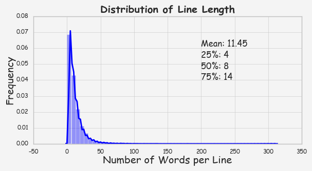
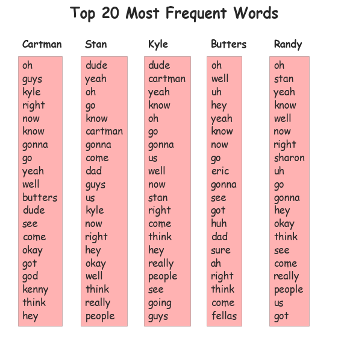
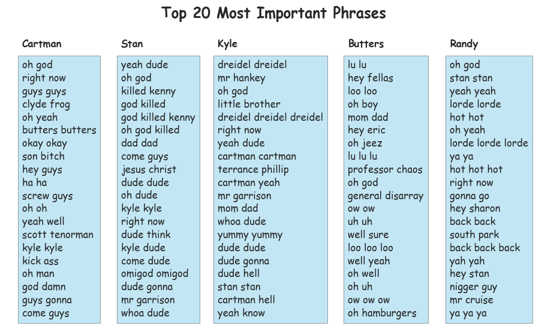

South Park Lines: Who is Speaking? (Part 1)
March 24, 2017
Introduction
South Park is an adult animated sitcom about four potty-mouthed grade boys Eric Cartman, Stan Marsh, Kyle Broflovshi, and Kenny McCormick and their adventures in a fictional Colorado town called South Park. The show debuted in 1997 and has been through 20 seasons now. It is such a famous show and it has won a lot of awards but for some reason I never really watched this show (except for a couple YouTube clips).
Recently, I found a dataset from Kaggle with the lines of the first 18 seasons. These lines have been annotated with season, episode and speaker. I was curious about what I can find out about the show just from this dataset. Also, I thought it would be interesting to build a classification model to guess the speakers based on the lines. This post will focus on the first part using data visualization. All the codes for this post can be found in my Github Repository.
Here it goes.
Get to Know the Show
First, I looked at some basic information about the show based on this dataset, such as the number of episodes, the number of characters, the number of lines, etc. The information is summarized in the table below:
| Seasons | Episodes | Characters | Lines | Words | Words (Unique) |
|---|---|---|---|---|---|
| 18 | 257 | 3,949 | 70,789 | 811,296 | 30,347 |
So how long are the lines? The number of words in a line is used to define the line length. The distribution of the line length shows that the majority of the lines in the show are relatively short (with a median of 8 words and a 75 percentile of 14 words).

Another question is how did the show evolve over the seasons in terms of the number of episodes, characters, and lines?

Based on the plot above, the show started off with 13 episodes and around 250 characters in Season 1. On average, it had about 320 lines per episode but the lines seem to be short. The first season was clearly a success as we can see a big jump in the numbers of episodes and characters as well as the average numbers of lines and words in Season 2. Overall, these numbers peaked from Season 2 through Season 4 followed by some slow decay. During Season 10 to Season 15, more characters were included in each season although each season remained to have 14 episodes. The average number of lines, interestingly, did not show a corresponding increase. But the lines were definitely getting longer on average from Season 13.
Get to Know the Characters
Who Spoke the Most?
We know that the story is about the four boys - Cartman, Stan, Kyle, and Kenny. Let’s see if that is what the lines are telling us. But first, we can see who actually appeared in all 18 seasons. It turned out that they are: Stan, Kyle, Cartman, Gerald, Mr. Mackey, Randy, Kenny, Clyde, Sheila, Sharon, Wendy, Principal Victoria, and Liane (and also voices annotated as ‘Woman’, ‘Man’, and ‘Announcer’).
Then, let’s see who spoke the most. We can check both the total number of lines and the number of words for each character.

Clearly, Cartman is No. 1, followed by Stan and Kyle. Kenny, however, falls out of the top 5. Instead, Butters and Randy are in the top 5 list although their line shares are significantly less than the other three. Also something to note is Butters actually did not appear in all 18 seasons. He was introduced into the show in Season 2.
So from now on, we can just focus on the top 5 speakers. The changes of their word shares over the seasons are shown below. Cartman remained to be No. 1 throughout the seasons, taking up to around 15% of the word shares. Stan and Kyle started off similarly like Cartman but their word shares decreased over time. Butters and Randy did not speak much in the first 4 seasons but they rise to be among the top speakers and ended up having similar word shares as Stan and Kyle, around 5%.


The average lengths of the lines (defined as the total number of words divided by total number of lines) for Cartman, Stan, Kyle and Randy have not changed dramatically over the seasons. Also, their line lengths are relatively close, 10-15 words per line. But for Butters, his average line length shows a huge jump from Season 2 (when he was first introduced to the show) to season 3. I was very curious about exactly how this character was introduced. What did he say in Season 2? It turned out that he only said two lines:
“Me, too!”
“Pass this up.”
What did Top Speakers Say?
So what exactly did the characters say? A word cloud from all the lines is shown as the cover image of this post. But I am more interested in the lines of the top speakers. What are their most frequent words and the most characteristic words?
Finding out the most frequent words is simply a word count problem. A note here is that stopwords were removed. Below I show the top 20 most frequent words for our top 5 speakers.

Compared to knowing the most frequent words, finding out the most characteristic words for each speaker is probably more interesting. Here, term frequency-inverse document frequency or tf-idf is used. It is often used in information retrieval and text mining as a measure to evaluate how important a word is to a document in a corpus. The tf-idf weight is composed by 2 components. one is the term frequency (tf) and it is simply the number of times term t appears in a document divided by the total number of terms in the corpus. The other component is the inverse document frequency (idf) and it is the natural log of the ratio between the total number of documents and the number of documents with term t in it. The final tf-idf weight is calculated as the product between tf and idf. So a term is more important to a document if it appears in this document for many times (large tf) but it does not appear in many of the documents in the corpus (large idf).
For our top 5 speakers, their most important words and phrases are shown below.


There are some swear words, as you can see. And Kenny apparently had been killed many times!
What did Kenny Say?
As one of the four main characters, Kenny had significantly small word shares in the show. So who is Kenny? What did he do in the story? Do these lines tell anything about what he is like? We can simply construct a word cloud using Kenny’s lines in the dataset (with stopwords removed). Apparently, the F word is among the top of Kenny’s vocabulary, along with other swear words!

The word cloud is based on word frequency. Another way to look at this is the importance of the words. The most important 20 words in Kenny’s lines with the highest tf-idf weights are shown below. We know that the show is known for its use of profanity. It seems that Kenny, one of the main characters in the show who spoke the least mainly spoke profanity.

Summary
In this post, I walked you through my exploration of the South Park lines dataset and showed you what I learned about the show and the characters from this dataset. My next step is to build a classification model which is able to guess the speaker based on the lines given. Stay tuned :)